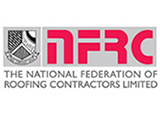
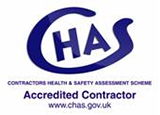

<footer class="footer-full">
    <div class="container">
        <div class="row">
        	<div class="col-sm-4">
        		<h3>Navigation</h3>
                <nav>
                    <ul class="list-unstyled">
      					<li class="active"><a href="/">Home</a></li>
                        <li><a href="who-we-are.html">Who we are</a></li>
                        <li><a href="what-we-do.html">What we do</a></li>
                         <li><a href="contact-us.html">Contact us</a></li>
                    </ul>
                </nav>
            </div>
          <div class="col-sm-4">
            <h3>Accolades</h3>
          <a href="http://www.nfrc.co.uk/search-members/search-detail/member/1394/Ashbridge-Roofing-Solutions"></a><a href="http://www.chas.co.uk/"></a></div>
        	<div class="col-sm-4">
            <h3>Legal stuff</h3>
            <p><b><small>Copyright © Ashbridge Roofing Solutions 2014 | Ashbridge Roofing Solutions is the trading name of ongo Roofing Ltd.</small></b></p>
                <p><small>Registered in England and Wales | Registered Company Number 09216586 | VAT registration 135 5775 93<br>
                  Registered address: Meridian House, Normanby Road, Scunthorpe, North Lincolnshire, DN15 8QZ</small></p>
         	</div>
            
         </div>
         </div>
    </footer>